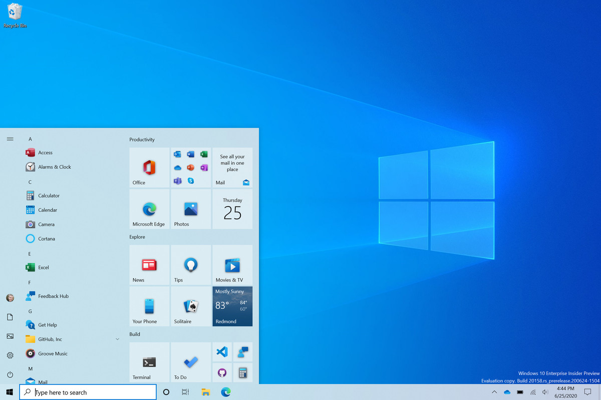
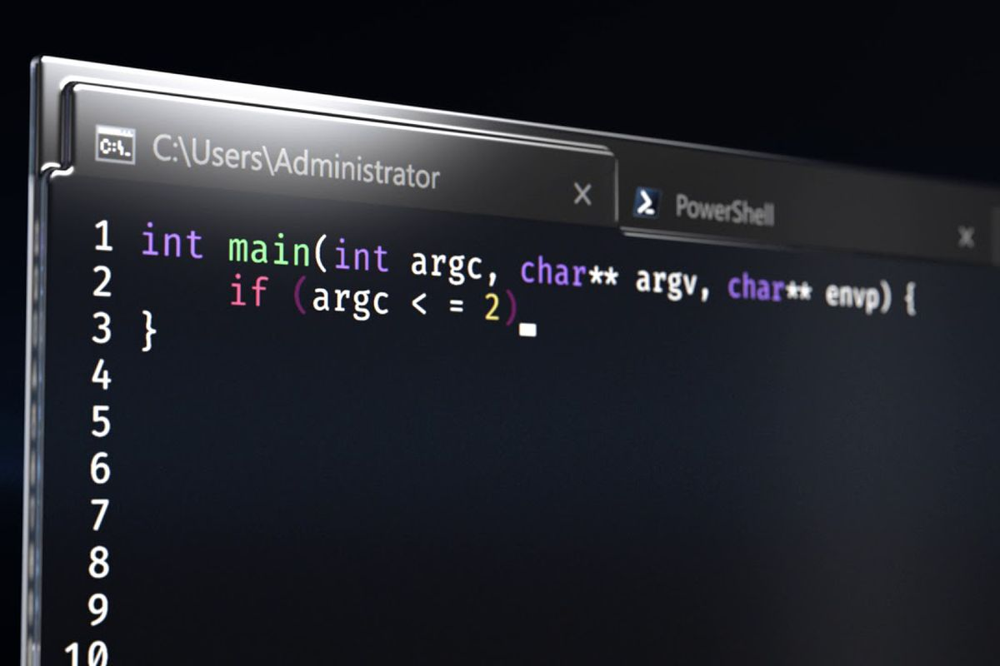
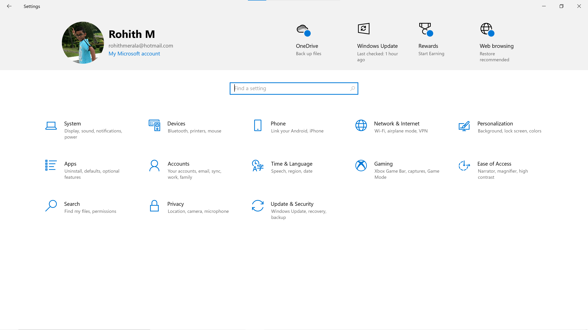

Windows 10
Introduction
Windows 10 is a popular OS developed by microsoft in the year 2015. It has A modern UI and As of 2021 It is the most Installed OS. Windows 10 is The successor of windows 8.1. Windows 10 has many new Features and a overall design Change. Some
of the major new features are Live Tiles In The start menu, Cortana The voice assistant integrated into windows 10 And multiple Desktops introduced. The OS was written In C, C++ and C#. Microsoft will Be ending support for windows 10 on
October 14th, 2025 As Windows 11 it's successor is Arriving on october 5 2021 Microsoft also Added a setting app which replaced the old control panel.

Command Prompt
The Command Prompt is a useful application in Which we can type commands To the OS. There Are many types of commands Some Examples are CHK Disk and sfc These are used to check if there is a issue in the drive or if here are any corrupted
files in the OS. To View All the command available just type help in Command Prompt. To know more about that command Type the command and give a space and then type /?, For examples: mklink /?. To open command prompt click on the search bar
in the taskbar and type cmd then click on open. some commands require to run as administrator. Recently Microsoft launched a updated version of Windows Command Prompt which is called Windows Terminal It is more advanced and more customizable
we can use the same commands as we use in the regular command Prompt. It can be downloaded from the Microsoft Store in Windows 10 and it is free. You can learn About 21 Useful Commands by Clicking
Here

Setting App
Windows 10 has a setting app Which is a modern control panel it consists Of almost all the options in Control Panel but with a modern UI and has some additional features. It is easier to find some setting In setting app. Now you can find the
windows update in setting app only. Now you can Install apps From The Microsoft store which can easily be edited and modified in Settings app. The settings app in windows was first launched in windows 8. The windows 11 settings is going to be
more advanced Which is going to launch with windows 11 on October 5 2021. The Major Features Of The setting app are That you can modify Your accounts, Add or remove passwords, change sign in method, Customize your Background And Theme, Manage
App Privacy, Etc.

Microsoft Store
The Microsoft store is a safe place to Download apps for windows users and can easily be deleted and modified. Even Games Are Available In the Microsoft Store. It was initially Launched in windows 8 with very less apps. The Microsoft Store is
the best place to install apps in windows 10. As of windows 10 all apps are not available but from windows 11 most of the apps will be available from the microsoft store as microsoft will be extending support for different types of apps such
as Win32 apps and Msi apps Which were not allowed previously. From Windows 11 you can even Install Android App Which is very Useful. Some Of the Most Popular And Very Useful apps are Whatsapp Desktop, Netflix app And Spotify Music. There are
Many other Apps Which you can Explore. Some Apps And Games Are Free And Some Are Paid.

Next Generation
Windows 11
Windows 11 is The Next Generation of Windows. It has a lot Of new Features and Changes. It is releasing to The Public From October 5 2021 Into Mid 2022 As Per Microsoft. One of the most Major Changes In Windows 11 is The design It has a new
Start Menu, Curved Corners And Looks Modern Windows 11 is A free Upgrade From Windows 10. You can upgrade From windows 10 Through The Update Section in the Settings app. There are Some Requirements which you need to pass to Upgrade to windows
11 Some Of the major Minimum Requirements are That you Need A TPM chip, Secure Boot And A 8'th Gen Or Above Intel Processor or AMD Zen 1 Ryzen Processor. To Check If you Meet The minimum Requirement You Can Click
Here And Download The Pc Health Check App Launched By Microsoft To Check If you Meet The Requirements. To Learn More About All
The Changes In WIndows 11 Click Here
 About
About